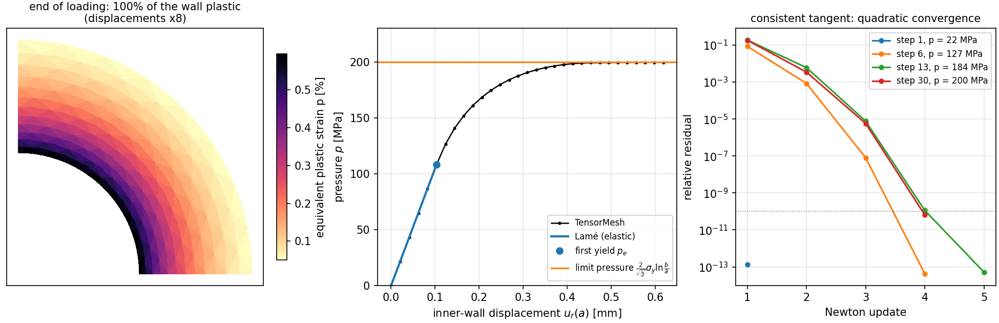

牛顿法求解塑性问题¶
弹塑性厚壁圆筒 [Hill1950]：一根长管在内压作用下加载，直到整个管壁都发生塑性流动。脚本 examples/solid/plasticity_cylinder/plasticity_cylinder.py 在平面应变下用 von Mises（J2）塑性模型求解该问题，并把结果与弹性响应的闭式解以及极限压力进行对比。
与 塑性（带各向同性硬化的 J2） 相比，新增的要素是 一致切线。在那个示例中，每个载荷步都用 L-BFGS 最小化一个增量能量；而在这里，每个载荷步都用牛顿法求解，所用的正是应力更新本身的导数，因此迭代呈二次收敛：每个塑性载荷步只需三到五次迭代。塑性状态保存在求积点上，并以 quadrature_data 的形式传入装配器。
模型¶
小应变 \(\boldsymbol{\varepsilon} = \boldsymbol{\varepsilon}^e + \boldsymbol{\varepsilon}^p\)，各向同性弹性（剪切模量 \(\mu\)，体积模量 \(\kappa\)），以及带线性各向同性硬化的 von Mises 屈服函数，
（\(\mathbf{s}\) 为偏应力，\(p\) 为等效塑性应变，\(H = 0\) 对应理想塑性），并采用关联流动法则。平面应变保持 \(\varepsilon_{zz} = 0\)，因此应变和应力都以 \(3 \times 3\) 张量的形式存储：\(\sigma_{zz}\) 不为零，\(\varepsilon^p_{zz}\) 也不为零。
径向返回。 在一个载荷步内，求积点处的总应变 \(\boldsymbol{\varepsilon}\) 是给定的，载荷步开始时的状态为 \((\boldsymbol{\varepsilon}^p_n, p_n)\)。试探应力 \(\boldsymbol{\sigma}^{tr} = \mathbb{C} : (\boldsymbol{\varepsilon} - \boldsymbol{\varepsilon}^p_n)\) 的偏量为 \(\mathbf{s}^{tr}\)，von Mises 应力为 \(q^{tr}\)。若 \(f^{tr} = q^{tr} - (\sigma_y + H p_n) \le 0\)，该步为弹性步；否则把偏应力按比例缩回到屈服面上：
一致切线 [Simo1985] [deSouzaNeto2008]。对这一更新（而不是对连续介质的本构关系）求导，就得到牛顿法所需的模量：
以上用于塑性点，其余点取弹性模量。radial_return 一次性为所有求积点计算应力、更新后的状态以及这些模量：
def radial_return(eps, eps_p, p, mat: J2Material):
"""Stress update of J2 plasticity at every quadrature point.
Parameters
----------
eps : torch.Tensor
Total strain ``[..., 3, 3]`` at the end of the step (plane strain:
the third row and column are zero).
eps_p, p : torch.Tensor
Plastic strain ``[..., 3, 3]`` and equivalent plastic strain ``[...]``
at the start of the step.
Returns
-------
sigma : torch.Tensor
Stress ``[..., 3, 3]``.
eps_p, p : torch.Tensor
Updated plastic state.
C : torch.Tensor
Consistent tangent d sigma / d eps ``[..., 3, 3, 3, 3]``:
kappa 1x1 + 2 mu (1 - 3 mu dp / q) I_dev + 6 mu^2 (dp / q - 1 / (3 mu + H)) N x N
on plastic points, kappa 1x1 + 2 mu I_dev on elastic ones, with q the
trial von Mises stress and N the unit trial deviator
(de Souza Neto, Peric and Owen, 2008, box 7.4).
"""
mu, kappa, H = mat.mu, mat.kappa, mat.H
one = torch.eye(3, dtype=eps.dtype, device=eps.device)
ee = eps - eps_p # trial elastic strain
tr = ee.diagonal(dim1=-2, dim2=-1).sum(-1)
s = 2 * mu * (ee - tr[..., None, None] / 3 * one) # trial deviatoric stress
norm_s = torch.sqrt((s * s).sum((-2, -1)))
q = math.sqrt(1.5) * norm_s # trial von Mises stress
f = q - (mat.sigma_y + H * p)
plastic = f > 0
dp = torch.where(plastic, f, torch.zeros_like(f)) / (3 * mu + H)
N = s / torch.where(plastic, norm_s, torch.ones_like(norm_s))[..., None, None]
flow = math.sqrt(1.5) * dp[..., None, None] * N # plastic strain increment
sigma = kappa * tr[..., None, None] * one + s - 2 * mu * flow
q_safe = torch.where(plastic, q, torch.ones_like(q))
a = torch.where(plastic, 3 * mu * dp / q_safe, torch.zeros_like(q))
b = torch.where(plastic, 6 * mu**2 * (dp / q_safe - 1 / (3 * mu + H)), torch.zeros_like(q))
ones = torch.einsum("ij,kl->ijkl", one, one)
sym = 0.5 * (torch.einsum("ik,jl->ijkl", one, one) + torch.einsum("il,jk->ijkl", one, one))
C = (kappa * ones + (2 * mu * (1 - a))[..., None, None, None, None] * (sym - ones / 3)
+ b[..., None, None, None, None] * torch.einsum("...ij,...kl->...ijkl", N, N))
return sigma, eps_p + flow, p + dp, C
测试集把这一切线与应力更新的前向模式自动微分导数 torch.func.jvp 进行比较。对于没有闭式切线的本构模型，这种导数也正是获得切线的途径。
求积点数据¶
应力和模量都是定义在求积点上的数组，形状为 [n_elements, n_quadrature, ...]。以 quadrature_data 传入后，每一项都以它在当前求积点处的值、按自身的名称传给 forward：
class InternalForce(NodeAssembler):
"""f_i = int sigma . grad N_i dx, sigma given at the quadrature points."""
def forward(self, gradv, sigma):
return sigma @ gradv
class Tangent(ElementAssembler):
"""K_ij = int grad N_i . C . grad N_j dx, C given at the quadrature points."""
def forward(self, gradu, gradv, C):
return torch.einsum("j,ajbl,l->ab", gradu, C, gradv)
内力向量为 InternalForce(quadrature_data={"sigma": sigma})，刚度矩阵为 Tangent(quadrature_data={"C": C})，二者使用 \(3 \times 3\) 张量的面内部分。压力沿内壁的单位外法向作用，FacetAssembler 的 forward 以 n 接收该法向：
class Pressure(FacetAssembler):
"""Nodal forces of a unit pressure, f_i = -int N_i n ds (n: outward normal)."""
def forward(self, v, n):
return -v[:, None] * n
牛顿法¶
每个载荷步迭代到非约束自由度上的残差低于外加力或反力的 \(10^{-10}\) 为止。第一次迭代从上一载荷步的收敛状态出发，把指定位移的变化传递到整个物体中（线性预测，借助 update_dirichlet()）；之后的迭代保持指定值不变。塑性状态在该步收敛后才提交，因此每次迭代都从同一个状态出发进行返回映射。
def solve_step(self, f_ext, prescribed=None):
"""Equilibrium for the external forces ``f_ext`` [n_points * 2] and the
values ``prescribed`` on the fixed dofs (default: keep them).
The first Newton iteration starts from the converged state and carries
the change of the prescribed values into the whole body (the linear
predictor); the later ones keep them. Returns the relative residual
after every Newton update.
"""
jump = torch.zeros_like(self.u)
if prescribed is not None:
jump = torch.where(self.fixed, prescribed - self.u, jump)
history = []
for it in range(self.max_iterations + 1):
R, (sigma, eps_p, p, C) = self.residual(self.u, f_ext)
if it > 0:
scale = max(float(torch.linalg.vector_norm(f_ext)), float(torch.linalg.vector_norm(R[self.fixed])),
1e-300)
history.append(float(torch.linalg.vector_norm(R[~self.fixed])) / scale)
if history[-1] <= self.tol:
break
if it == self.max_iterations:
raise RuntimeError(f"Newton did not converge: relative residuals {history}")
K = self.tangent(quadrature_data={"C": C[..., :2, :2, :2, :2]})
self.condenser.update_dirichlet(jump if it == 0 else torch.zeros_like(jump))
K_free, rhs = self.condenser(K, -R)
du = K_free.solve(rhs, backend=self.linear_solver).to(rhs.device) # SciPy answers on the host
self.u = self.u + self.condenser.recover(du)
self.eps_p, self.p, self.sigma = eps_p, p, sigma # commit the converged state
self.reaction = R
return history
厚壁圆筒¶
几何：取圆管的四分之一，\(a = 100\) mm，\(b = 200\) mm，平面应变；在 \(x\) 轴上 \(u_y = 0\)，在 \(y\) 轴上 \(u_x = 0\)。
材料：\(E = 200\) GPa，\(\nu = 0.3\)，\(\sigma_y = 250\) MPa，理想塑性。
加载：内壁在 30 步内被向外推到初始屈服位移的六倍。在这种位移控制下，压力取为内壁反力在单位压力节点力上的投影。
--control pressure改为逐步提高压力，此时加载停在极限压力之前。网格：用 NumPy 在极坐标网格上生成的六节点三角形单元。径向间距随 \(r\) 增大，圆弧边的中点节点位于圆周上（825 个节点）。


图 62 plasticity_cylinder.py 的输出。左：加载结束时的等效塑性应变。中：压力与内壁位移的关系，并标出 Lamé 直线、初始屈服点和极限压力。右：一个弹性步、第一个塑性步、塑性区约占一半的载荷步以及最后一步的牛顿残差。¶
响应沿 Lamé 直线变化，直到内壁在 \(p_e = 108.1\) MPa 时屈服。随后塑性区向外扩展，压力增长得越来越慢。塑性区到达外壁后，圆筒在几乎恒定的压力下流动：最后一步的压力为 199.7 MPa，与极限压力 \(\tfrac{2}{\sqrt3}\, \sigma_y \ln(b/a) = 200.1\) MPa 相差不到 0.2%，并从下方逼近。弹性步只需一次牛顿更新，塑性步需要三到五次，每次更新后残差大致平方一次。
验证¶
tests/assemble/test_plasticity_cylinder_example.py 检查以下内容：
返回映射：塑性点最终落在屈服面上，弹性点保持弹性应力，塑性流动为偏量，切线与应力更新的前向模式自动微分导数一致。
刚度矩阵：装配得到的切线刚度与残差的中心差分一致。
弹性阶段：内壁位移与 Lamé 解一致，
\[\frac{p}{u_r(a)} = \frac{E\, (b^2 - a^2)}{(1 + \nu)\, a\, \bigl[(1 - 2\nu)\, a^2 + b^2\bigr]},\]压力控制和位移控制下均如此。
初始屈服：低于初始屈服位移时没有塑性点；略高于该位移时，塑性点只出现在最内层单元中。
塑性坍塌：理想塑性圆管的压力从下方逼近极限压力，误差在 1% 以内，并且每个载荷步的牛顿法最多六次更新即收敛。
设备：存在 GPU 时，比较 CUDA 与 CPU 的结果。
运行它¶
cd examples/solid/plasticity_cylinder
python plasticity_cylinder.py # displacement control
python plasticity_cylinder.py --control pressure # up to 0.98 of the limit pressure
python plasticity_cylinder.py --hardening 2000 # H = 2 GPa
默认运行在 CPU 上只需几秒钟。--device cuda 在 GPU 上装配；此时若 torch-sla 支持 cuDSS，牛顿方程组用 cuDSS 求解，否则在主机上用 SciPy 求解。
说明¶
为什么用位移控制。 在压力控制下，理想塑性圆管无法加载到极限压力以上，而且在接近极限压力时切线矩阵会变得奇异。指定内壁位移则可以沿着平台继续加载。
单元。 塑性流动保持体积不变，平面应变下线性（常应变）三角形单元在这一约束下会发生锁死，从而高估坍塌载荷 [Nagtegaal1974]。本例使用的二次三角形单元得到的极限压力误差在 0.2% 以内。
第一次迭代。 如果在第一次求解之前只把边界节点移到新的指定位置，就只有紧邻它们的那一层单元产生应变，可能使这层单元出现虚假的屈服。线性预测会先把这一变化传递到整个物体中。
下一步¶
塑性（带各向同性硬化的 J2）：同一个 J2 模型写成增量能量的形式，用 L-BFGS 最小化，使用
J2Plasticity。形式：
quadrature_data、n以及forward可以接收的其他参数名。
R. Hill, The Mathematical Theory of Plasticity, Oxford University Press, 1950.
J. C. Simo and R. L. Taylor, Consistent tangent operators for rate-independent elastoplasticity, Computer Methods in Applied Mechanics and Engineering, 48(1):101–118, 1985.
E. A. de Souza Neto, D. Perić and D. R. J. Owen, Computational Methods for Plasticity: Theory and Applications, Wiley, 2008.
J. C. Nagtegaal, D. M. Parks and J. R. Rice, On numerically accurate finite element solutions in the fully plastic range, Computer Methods in Applied Mechanics and Engineering, 4(2):153–177, 1974.